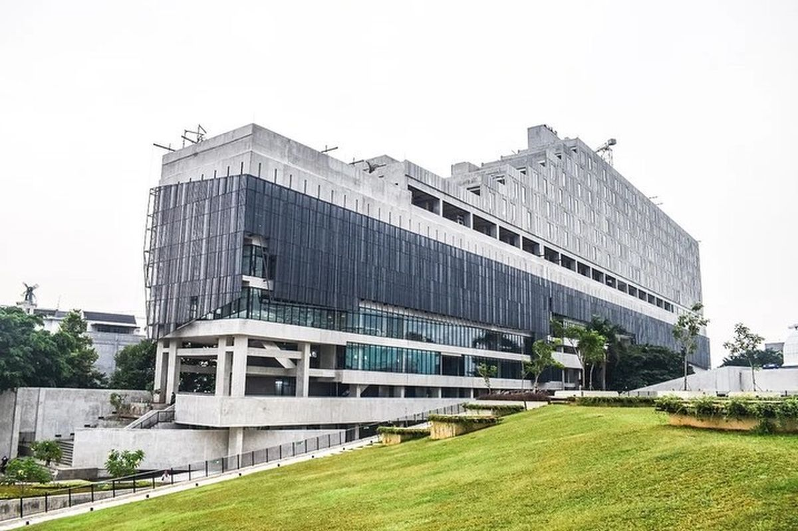

Mengenal Perpustakaan Taman Ismail Marzuki

Tentang Perpustakaan Taman Ismail Marzuki
Perpustakaan ini berlokasi di Taman Ismail Marzuki (TIM), Kecamatan Menteng, Kota Jakarta Pusat.
Perpustakaan ini didirikan pada 30 Mei 1977 dengan nama Pusat Dokumentasi Sastra HB dan diresmikan oleh gubernur Jakarta kala itu Ali Sadikin.
Pada Juli 2022, Perpustakaan ini diresmikan oleh Gubernur Anies Baswedan setelah mengalami renovasi.
Pada 2022, perpusatakaan ini memiliki 138.000 koleksi. Andra Matin adalah arsitek ketika perpustakaan ini di renovasi.
Setelah renovasi kapasitas perpustakaan menjad 300 orang. Ruang koleksi berada di lantai 4, 5, dan 6.
Perpustakaan ini telah mengalami berbagai perkembangan dan menjadi tempat yang ramah bagi para pecinta buku dan penikmat literasi.
Didirikan dengan tujuan untuk menyediakan akses ke bahan bacaan yang bermutu bagi masyarakat Jakarta. Seiring berjalannya waktu,
perpustakaan ini mengalami transformasi dan peningkatan fasilitas untuk memenuhi kebutuhan pengunjung modern.
Perpustakaan ini atau yang biasa disebut sebagai Perpustakaan Jakarta Cikini dan Pusat Dokumentasi Sastra HB Jassin,
sudah digabung menjadi satu kesatuan berupa gedung perpustakaan. Tentu fokusnya pada penyediaan berbagai jenis buku,
selain fungsi lainnya untuk menggelar kegiatan pameran dan event.
Perpustakaan ini bila dikunjungi terasa nyaman dan menyenangkan. Di bagian depan gedung pengunjung disambut dengan pemandangan yang artistik.
Material bangunan dari gabungan partikel kayu, kaca, dan material modern lainnya terasa sangat minimalis, modern dan estetik.
Pada bagian ruang utama perpustakaan, nampak berderet buku-buku di tata dengan rapi di rak-rak lemari berbingkai motif kayu.
Jam Buka Perpustakaan Jakarta TIM
Melansir dari laman Instagram @perpusjkt, Perpustakaan Jakarta Cikini buka dari pukul 09.00 - 17.00 WIB.
Apabila hari libur nasional dan cuti bersama, Perpustakaan Jakarta Cikini tutup.
Cara Daftar Anggota dan Cara Berkunjung ke Perpustakaan TIM
Cara Daftar Anggota Perpustakaan TIM
Sebelum mengikuti cara daftar anggota Perpustakaan Jakarta, ada beberapa syarat yang harus dipenuhi.
Adapun syarat menjadi anggota Perpustakaan Jakarta antara lain memiliki KTP DKI Jakarta bagi warga Jakarta.
Sementara untuk warga non Jakarta wajib memiliki KITAS bagi warga asing atau surat keterangan domisili/surat keterangan bekerja di Jakarta/surat keterangan bersekolah di Jakarta.
Setelah memastikan Anda memenuhi persyaratan tersebut, saatnya mendaftar sebagai anggota Perpustakaan Jakarta melalui Jaklitera.
Berikut cara daftar anggota Perpustakaan Jakarta:
- Kunjungi halaman perpustakaan.jakarta.go.id/
- Ketuk 'Daftar' di bagaian beranda
- Masukkan email dan data diri
- Ketuk 'Selanjutnya' untuk memperoleh kode OTP melalui email
- Konfirmasi kode OTP melalui tautan di email.
- Lakukan verifikasi dengan mengunggah foto diri dengan format close up, ketuk 'Lengkapi Data Diri'.
- Jika memiliki KTP DKI Jakarta, ketuk 'Selanjutnya'. Sementara warga luar DKI Jakarta wajib mengunggah KTP dan surat keterangan domisili/bekerja/bersekolah di Jakarta, kemudian 'Selanjutnya'.
- Isi alamat lengkap sesuai KTP, lalu ketuk 'Selesai'.
- Jika pendaftaran berhasil, Anda akan menerima status TERVERIFIKASI melalui email atau periksa akun Anda di Jaklitera.
Cara Berkunjung ke Perpustakaan TIM
Sudah daftar anggota Perpustakaan Jakarta, saatnya mengikuti cara berkunjung ke Perpustakaan TIM. Sebelum datang, Anda perlu melakukan reservasi.
Berikut cara berkunjung ke Perpustakaan Jakarta:
- Buka aplikasi Jaklitera atau halaman Jaklitera perpustakaan.jakarta.go.id/
- Log in dan ketuk 'Jelajahi'. Kemudian ketuk 'Isi Buku Tamu'
- Masukkan tanggal kunjungan, pilih 'Perpustakaan Jakarta'
- Masukkan NIK. Kemudian akan muncul kode QR yang akan digunakan untuk check-in saat kunjungan.
- Scan kode QR di mesin yang terletak di pintu masuk Perpustakaan Jakarta.
Area serta Fasilitas dan Koleksi Buku di Perpustakaan TIM
Terdapat sekitar 138.000 koleksi buku di lantai 4, yang mana 70.000 buku di antaranya dapat dipinjam pengunjung
| Area |
Fasilitas dan Koleksi |
| Lantai 4 |
Di lantai 4 terdapat koleksi buku anak-anak, buku hobi dan ketrampilan, buku-buku fiksi dalam dan luar negeri.
Pada ruang tengah, berbaris rak buku anak yang sudah dikategorikan berdasarkan umur, mulai 0-12 tahun.
Diujung ruangan, ada Bilik Bermain yang berisi permainan anak dan Bilik Cerita untuk acara dongeng anak serta mushola. |
| Lantai 5 |
Di sana tersedia buku-buku non fiksi lebih pada tema pengetahuan umum. Lantai ini menjadi sumber informasi bagi banyak mahasiswa
dan pelajar untuk mencari buku-buku untuk tugas mereka. |
| Lantai 6 |
Di lantai 6 tersedia buku-buku yang menjadi referensi pengetahuan untuk para pengunjung, di sini ada ruang buku dengan nama KCKR (Karya Cetak dan Karya Rekam). Buku-buku koleksi ini tidak bisa dipinjam, hanya untuk dibaca di dalam perpustakaan saja. |
Layanan Perpustakaan TIM
Layanan Sirkulasi
Layanan Referensi dan Informasi
Akses ke koleksi digital
Layanan perpanjangan dan reservasi buku secara online
CONTACT US
Taman Ismail Marzuki - Jl. Cikini Raya no 73, Menteng, Jakarta Pusat
Perpustakaan TIM
@perpusjkt
perpustakaan@jakarta.go.id
DISPUSIP Provinsi DKI Jakarta
(021) 3154087
Website